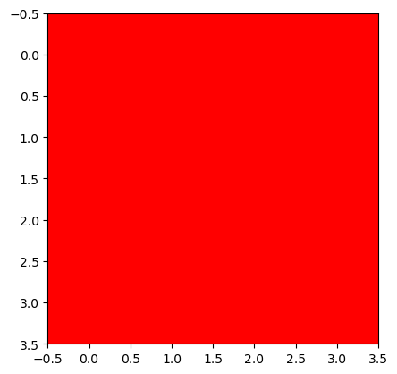
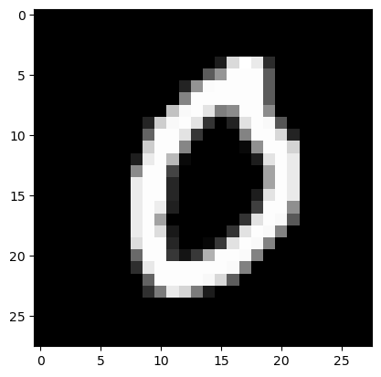
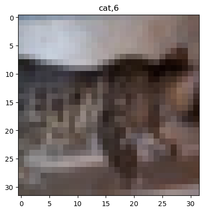

import torch
import torchvision
import matplotlib.pyplot as plt
import pandas as pd
import numpy as np
import fastai.vision.all 06wk-1: 합성곱 신경망 (2) – MNIST, Fashion MNIST, ImageNet, CIFAR10

1. 강의영상
2. Imports
3. torch.eigensum
A. transpose
tsr = torch.arange(12).reshape(4,3)
tsrtensor([[ 0, 1, 2],
[ 3, 4, 5],
[ 6, 7, 8],
[ 9, 10, 11]])tsr.t()tensor([[ 0, 3, 6, 9],
[ 1, 4, 7, 10],
[ 2, 5, 8, 11]])torch.einsum('ij->ji',tsr)tensor([[ 0, 3, 6, 9],
[ 1, 4, 7, 10],
[ 2, 5, 8, 11]])B. 행렬곱
tsr1 = torch.arange(12).reshape(4,3).float()
tsr2 = torch.arange(15).reshape(3,5).float()tsr1.shapetorch.Size([4, 3])tsr2.shapetorch.Size([3, 5])tsr1 @ tsr2tensor([[ 25., 28., 31., 34., 37.],
[ 70., 82., 94., 106., 118.],
[115., 136., 157., 178., 199.],
[160., 190., 220., 250., 280.]])torch.einsum('ij,jk -> ik',tsr1,tsr2) tensor([[ 25., 28., 31., 34., 37.],
[ 70., 82., 94., 106., 118.],
[115., 136., 157., 178., 199.],
[160., 190., 220., 250., 280.]])C. 이미지변환
r = torch.zeros(16).reshape(4,4) + 1.0
g = torch.zeros(16).reshape(4,4)
b = torch.zeros(16).reshape(4,4)
img_plt = torch.stack([r,g,b],axis=-1) # matplotlib 를 쓰기 위해서는 이미지가 이렇게 저장되어있어야한다.
img_torch = torch.stack([r,g,b],axis=0).reshape(1,3,4,4) # torch를 쓰기 위해서는 이미지가 이렇게 저장되어있어야한다. img_plt.shape, img_torch.shape(torch.Size([4, 4, 3]), torch.Size([1, 3, 4, 4]))plt.imshow(img_plt)
만약에 img_torch를 matplotlib 으로 보고싶다면?
# 잘못된코드
plt.imshow(img_torch.reshape(4,4,3))
# 올바른코드
plt.imshow(torch.einsum('ocij -> ijc',img_torch))
4. MNIST – 직접설계
path = fastai.data.external.untar_data(fastai.data.external.URLs.MNIST)
X0 = torch.stack([torchvision.io.read_image(str(fname)) for fname in (path/'training/0').ls()])
X1 = torch.stack([torchvision.io.read_image(str(fname)) for fname in (path/'training/1').ls()])
X2 = torch.stack([torchvision.io.read_image(str(fname)) for fname in (path/'training/2').ls()])
X = torch.concat([X0,X1,X2])/255
y = torch.nn.functional.one_hot(torch.tensor([0]*len(X0) + [1]*len(X1) + [2]*len(X2))).float()
X0 = torch.stack([torchvision.io.read_image(str(fname)) for fname in (path/'testing/0').ls()])
X1 = torch.stack([torchvision.io.read_image(str(fname)) for fname in (path/'testing/1').ls()])
X2 = torch.stack([torchvision.io.read_image(str(fname)) for fname in (path/'testing/2').ls()])
XX = torch.concat([X0,X1,X2])/255
yy = torch.nn.functional.one_hot(torch.tensor([0]*len(X0) + [1]*len(X1) + [2]*len(X2))).float()print(X.shape,'\t',X.dtype)
print(y.shape,'\t\t\t',y.dtype)
print(XX.shape,'\t',XX.dtype)
print(yy.shape,'\t\t\t',yy.dtype)torch.Size([18623, 1, 28, 28]) torch.float32
torch.Size([18623, 3]) torch.float32
torch.Size([3147, 1, 28, 28]) torch.float32
torch.Size([3147, 3]) torch.float32plt.imshow(torch.einsum('cij -> ijc',X[0]),cmap="gray")
A. y: (n,3)-float
# Step1: 데이터정리 (dls생성)
ds = torch.utils.data.TensorDataset(X,y)
dl = torch.utils.data.DataLoader(ds,batch_size=128)
# Step2: 적합에 필요한 오브젝트 생성
net1 = torch.nn.Sequential(
torch.nn.Conv2d(1,16,(5,5)),
torch.nn.ReLU(),
torch.nn.MaxPool2d((2,2)),
torch.nn.Flatten()
)
net2 = torch.nn.Sequential(
torch.nn.Linear(2304,3),
)
net = torch.nn.Sequential(
net1, # 2d-part
net2, # 1d-part
)
loss_fn = torch.nn.CrossEntropyLoss()
optimizr = torch.optim.Adam(net.parameters())
# Step3: 적합
net.to("cuda:0")
for epoc in range(10):
for xi,yi in dl:
## 1
## 2
loss = loss_fn(net(xi.to("cuda:0")),yi.to("cuda:0"))
## 3
loss.backward()
## 4
optimizr.step()
optimizr.zero_grad()
net.to("cpu")
# Step4: 예측 및 평가
print(f'train: {(net(X).data.argmax(axis=1) == y.argmax(axis=1)).float().mean():.4f}')
print(f'val: {(net(XX).data.argmax(axis=1) == yy.argmax(axis=1)).float().mean():.4f}')train: 0.9851
val: 0.9898B. y: (n,)-int
y = y.argmax(axis=-1)
yy = yy.argmax(axis=-1)
y,yy(tensor([0, 0, 0, ..., 2, 2, 2]), tensor([0, 0, 0, ..., 2, 2, 2]))print(X.shape,'\t',X.dtype)
print(y.shape,'\t\t',y.dtype)
print(XX.shape,'\t',XX.dtype)
print(yy.shape,'\t\t',yy.dtype)torch.Size([18623, 1, 28, 28]) torch.float32
torch.Size([18623]) torch.int64
torch.Size([3147, 1, 28, 28]) torch.float32
torch.Size([3147]) torch.int64# Step1: 데이터정리 (dls생성)
ds = torch.utils.data.TensorDataset(X,y)
dl = torch.utils.data.DataLoader(ds,batch_size=128)
# Step2: 적합에 필요한 오브젝트 생성
net1 = torch.nn.Sequential(
torch.nn.Conv2d(1,16,(5,5)),
torch.nn.ReLU(),
torch.nn.MaxPool2d((2,2)),
torch.nn.Flatten()
)
net2 = torch.nn.Sequential(
torch.nn.Linear(2304,3),
)
net = torch.nn.Sequential(
net1, # 2d-part
net2, # 1d-part
)
loss_fn = torch.nn.CrossEntropyLoss()
optimizr = torch.optim.Adam(net.parameters())
# Step3: 적합
net.to("cuda:0")
for epoc in range(10):
for xi,yi in dl:
## 1
## 2
loss = loss_fn(net(xi.to("cuda:0")),yi.to("cuda:0"))
## 3
loss.backward()
## 4
optimizr.step()
optimizr.zero_grad()
net.to("cpu")
# Step4: 예측 및 평가
print(f'train: {(net(X).data.argmax(axis=1) == y).float().mean():.4f}') # <-- 여기수정
print(f'val: {(net(XX).data.argmax(axis=1) == yy).float().mean():.4f}') # <-- 여기수정train: 0.9836
val: 0.98955. Fashion-MNIST – fastai
- Data
df_train=pd.read_csv('https://media.githubusercontent.com/media/guebin/PP2023/main/posts/fashion-mnist_train.csv')
df_test=pd.read_csv('https://media.githubusercontent.com/media/guebin/PP2023/main/posts/fashion-mnist_test.csv')
def rshp(row):
return row.reshape(1,28,28)
X = torch.tensor(np.apply_along_axis(rshp,axis=1,arr=np.array(df_train.iloc[:,1:]))).float()
XX = torch.tensor(np.apply_along_axis(rshp,axis=1,arr=np.array(df_test.iloc[:,1:]))).float()
y = torch.tensor(np.array(df_train.label))
yy = torch.tensor(np.array(df_test.label))print(X.shape,'\t',X.dtype)
print(y.shape,'\t\t\t',y.dtype)
print(XX.shape,'\t',XX.dtype)
print(yy.shape,'\t\t\t',yy.dtype)torch.Size([60000, 1, 28, 28]) torch.float32
torch.Size([60000]) torch.int64
torch.Size([10000, 1, 28, 28]) torch.float32
torch.Size([10000]) torch.int64plt.imshow(torch.einsum('cij -> ijc',X[0]),cmap="gray")
A. torch
# Step1: 데이터정리 (dls생성)
ds = torch.utils.data.TensorDataset(X,y)
dl = torch.utils.data.DataLoader(ds,batch_size=128)
# Step2: 적합에 필요한 오브젝트 생성
net1 = torch.nn.Sequential(
torch.nn.Conv2d(1,16,(5,5)),
torch.nn.ReLU(),
torch.nn.MaxPool2d((2,2)),
torch.nn.Flatten()
)
net2 = torch.nn.Sequential(
torch.nn.Linear(2304,10),
)
net = torch.nn.Sequential(
net1, # 2d-part
net2, # 1d-part
)
loss_fn = torch.nn.CrossEntropyLoss()
optimizr = torch.optim.Adam(net.parameters())
# Step3: 적합
net.to("cuda:0")
for epoc in range(10):
for xi,yi in dl:
## 1
## 2
loss = loss_fn(net(xi.to("cuda:0")),yi.to("cuda:0"))
## 3
loss.backward()
## 4
optimizr.step()
optimizr.zero_grad()
net.to("cpu")
# Step4: 예측 및 평가
print(f'train: {(net(X).data.argmax(axis=1) == y).float().mean():.4f}')
print(f'val: {(net(XX).data.argmax(axis=1) == yy).float().mean():.4f}')train: 0.9077
val: 0.8723B. fastai
# Step1: 데이터정리 (dls생성)
ds1 = torch.utils.data.TensorDataset(X,y)
ds2 = torch.utils.data.TensorDataset(XX,yy)
dl1 = torch.utils.data.DataLoader(ds1,batch_size=128)
dl2 = torch.utils.data.DataLoader(ds2,batch_size=100)
dls = fastai.data.core.DataLoaders(dl1,dl2)
# Step2: 적합에 필요한 오브젝트 생성
net1 = torch.nn.Sequential(
torch.nn.Conv2d(1,16,(5,5)),
torch.nn.ReLU(),
torch.nn.MaxPool2d((2,2)),
torch.nn.Flatten()
)
net2 = torch.nn.Sequential(
torch.nn.Linear(2304,10),
)
net = torch.nn.Sequential(
net1, # 2d-part
net2, # 1d-part
)
loss_fn = torch.nn.CrossEntropyLoss()
#optimizr = torch.optim.Adam(net.parameters())
lrnr = fastai.learner.Learner(
dls=dls,
model=net,
loss_func=loss_fn,
#--#
metrics=[fastai.metrics.accuracy]
)
# Step3: 적합
lrnr.fit(10)
# Step4: 예측 및 평가
lrnr.model.to("cpu")
print(f'train: {(lrnr.model(X).data.argmax(axis=1) == y).float().mean():.4f}')
print(f'val: {(lrnr.model(XX).data.argmax(axis=1) == yy).float().mean():.4f}')| epoch | train_loss | valid_loss | accuracy | time |
|---|---|---|---|---|
| 0 | 0.484642 | 0.444805 | 0.858300 | 00:01 |
| 1 | 0.393360 | 0.413498 | 0.862200 | 00:01 |
| 2 | 0.340997 | 0.403366 | 0.866100 | 00:01 |
| 3 | 0.310863 | 0.421401 | 0.866300 | 00:01 |
| 4 | 0.291870 | 0.426586 | 0.865400 | 00:01 |
| 5 | 0.277852 | 0.429622 | 0.866500 | 00:01 |
| 6 | 0.266723 | 0.444076 | 0.870700 | 00:01 |
| 7 | 0.260530 | 0.456487 | 0.871100 | 00:01 |
| 8 | 0.253032 | 0.458816 | 0.875000 | 00:01 |
| 9 | 0.247392 | 0.483315 | 0.870800 | 00:01 |
train: 0.9124
val: 0.87086. ImageNet – 직접설계/transfer
A. 알렉스넷(Krizhevsky, Sutskever, and Hinton 2012)의 의미
Krizhevsky, Alex, Ilya Sutskever, and Geoffrey E Hinton. 2012. “Imagenet Classification with Deep Convolutional Neural Networks.” Advances in Neural Information Processing Systems 25.
- 야사로 배우는 인공지능: https://brunch.co.kr/@hvnpoet/109
B. 알렉스넷의 아키텍처 써보기
- 알렉스넷의 아키텍처:

- 재미삼아 써보면..
img = torch.zeros(1,3*227*227).reshape(1,3,227,227)
img.shapetorch.Size([1, 3, 227, 227])net = torch.nn.Sequential(
torch.nn.Conv2d(3,96,kernel_size=(11,11),stride=4),
torch.nn.ReLU(),
torch.nn.MaxPool2d((3,3),stride=2), # default stride는 3
torch.nn.Conv2d(96,256,kernel_size=(5,5),padding=2),
torch.nn.ReLU(),
torch.nn.MaxPool2d((3,3),stride=2), # default stride는 3
torch.nn.Conv2d(256,384,kernel_size=(3,3),padding=1),
torch.nn.ReLU(),
torch.nn.Conv2d(384,384,kernel_size=(3,3),padding=1),
torch.nn.ReLU(),
torch.nn.Conv2d(384,256,kernel_size=(3,3),padding=1),
torch.nn.ReLU(),
torch.nn.MaxPool2d((3,3),stride=2),
torch.nn.Flatten(),
torch.nn.Linear(9216,4096),
torch.nn.ReLU(),
torch.nn.Dropout(0.5),
torch.nn.Linear(4096,4096),
torch.nn.ReLU(),
torch.nn.Dropout(0.5),
torch.nn.Linear(4096,1000),
)- 참고사항: torchvision.models.alexnet()을 이용하여 네크워크를 선언할 수도 있음.
torchvision.models.alexnet()AlexNet(
(features): Sequential(
(0): Conv2d(3, 64, kernel_size=(11, 11), stride=(4, 4), padding=(2, 2))
(1): ReLU(inplace=True)
(2): MaxPool2d(kernel_size=3, stride=2, padding=0, dilation=1, ceil_mode=False)
(3): Conv2d(64, 192, kernel_size=(5, 5), stride=(1, 1), padding=(2, 2))
(4): ReLU(inplace=True)
(5): MaxPool2d(kernel_size=3, stride=2, padding=0, dilation=1, ceil_mode=False)
(6): Conv2d(192, 384, kernel_size=(3, 3), stride=(1, 1), padding=(1, 1))
(7): ReLU(inplace=True)
(8): Conv2d(384, 256, kernel_size=(3, 3), stride=(1, 1), padding=(1, 1))
(9): ReLU(inplace=True)
(10): Conv2d(256, 256, kernel_size=(3, 3), stride=(1, 1), padding=(1, 1))
(11): ReLU(inplace=True)
(12): MaxPool2d(kernel_size=3, stride=2, padding=0, dilation=1, ceil_mode=False)
)
(avgpool): AdaptiveAvgPool2d(output_size=(6, 6))
(classifier): Sequential(
(0): Dropout(p=0.5, inplace=False)
(1): Linear(in_features=9216, out_features=4096, bias=True)
(2): ReLU(inplace=True)
(3): Dropout(p=0.5, inplace=False)
(4): Linear(in_features=4096, out_features=4096, bias=True)
(5): ReLU(inplace=True)
(6): Linear(in_features=4096, out_features=1000, bias=True)
)
)
Note
직접구현한 알렉스넷과 torchvision.models.alexnet()를 이용한 알렉스넷은 약간다름.
그 이유는 파이토치에서는 원래 논문에서 구현된 알렉스넷이 아니라 이후 수정된 알렉스넷을 사용하기 때문임. 이 내용은 파이토치 공식홈페이지에서 아래와 같이 명시되어있음.
AlexNet was originally introduced in the ImageNet Classification with Deep Convolutional Neural Networks paper. Our implementation is based instead on the “One weird trick” paper above.ref: https://pytorch.org/vision/main/models/generated/torchvision.models.alexnet.html
C. 알렉스넷으로 ImageNet 적합
pass # 데이터가 너무 커서.. 코랩에서 못할것같아요7. CIFAR10 – transfer
A. dls 만들자
- X,y를 얻자.
path = fastai.data.external.untar_data(fastai.data.external.URLs.CIFAR)
path.ls()
100.00% [168173568/168168549 00:49<00:00]
(#3) [Path('/root/.fastai/data/cifar10/train'),Path('/root/.fastai/data/cifar10/labels.txt'),Path('/root/.fastai/data/cifar10/test')]labels = [str(l).split('/')[-1] for l in (path/'train').ls()]
labels['deer',
'airplane',
'ship',
'dog',
'automobile',
'truck',
'cat',
'frog',
'horse',
'bird']X = torch.stack([torchvision.io.read_image(str(fname)) for l in labels for fname in (path/f'train/{l}').ls()],axis=0).float()/255
XX = torch.stack([torchvision.io.read_image(str(fname)) for l in labels for fname in (path/f'test/{l}').ls()],axis=0).float()/255
y = torch.tensor([i for i,l in enumerate(labels) for fname in (path/f'train/{l}').ls()])
yy = torch.tensor([i for i,l in enumerate(labels) for fname in (path/f'test/{l}').ls()])print(X.shape,'\t',X.dtype)
print(y.shape,'\t\t\t',y.dtype)
print(XX.shape,'\t',XX.dtype)
print(yy.shape,'\t\t\t',yy.dtype)torch.Size([50000, 3, 32, 32]) torch.float32
torch.Size([50000]) torch.int64
torch.Size([10000, 3, 32, 32]) torch.float32
torch.Size([10000]) torch.int64- 데이터를 시각화해보자.
ylabel = [l for l in labels for fname in (path/f'train/{l}').ls()]
i = 30002
plt.imshow(torch.einsum('cij->ijc',X[i]))
plt.title(f'{ylabel[i]},{y[i]}')Text(0.5, 1.0, 'cat,6')
- 그림이 너무 어려운데?
- 맞추기 힘들겠는데..
- dls를 만들자.
ds1 = torch.utils.data.TensorDataset(X,y)
ds2 = torch.utils.data.TensorDataset(XX,yy)
dl1 = torch.utils.data.DataLoader(ds1,batch_size=256,shuffle=True)
dl2 = torch.utils.data.DataLoader(ds2,batch_size=100)
dls = fastai.data.core.DataLoaders(dl1,dl2)- 아래와 같이 쉽게 만들수도있음…
# dls = fastai.vision.data.ImageDataLoaders.from_folder(path,train='train',valid='test')
# dls.show_batch()B. 수제네트워크로 학습
- 시도1: 이게 좀 힘들어요 ㅎㅎ
# Step1:
ds1 = torch.utils.data.TensorDataset(X,y)
ds2 = torch.utils.data.TensorDataset(XX,yy)
dl1 = torch.utils.data.DataLoader(ds1,batch_size=256)
dl2 = torch.utils.data.DataLoader(ds2,batch_size=100)
dls = fastai.data.core.DataLoaders(dl1,dl2)
# Step2:
net1 = torch.nn.Sequential(
torch.nn.Conv2d(3,16,(5,5)),
torch.nn.ReLU(),
torch.nn.MaxPool2d((2,2)),
torch.nn.Flatten()
)
net2 = torch.nn.Sequential(
torch.nn.Linear(3136,10),
)
net = torch.nn.Sequential(
net1, # 2d-part
net2, # 1d-part
)
loss_fn = torch.nn.CrossEntropyLoss()
lrnr = fastai.learner.Learner(
dls=dls,
model=net,
loss_func=loss_fn,
#--#
metrics=[fastai.metrics.accuracy]
)
# Step3:
lrnr.fit(10)
# Step4:
lrnr.model.to("cpu")
print(f'train: {(lrnr.model(X).data.argmax(axis=1) == y).float().mean():.4f}')
print(f'val: {(lrnr.model(XX).data.argmax(axis=1) == yy).float().mean():.4f}')| epoch | train_loss | valid_loss | accuracy | time |
|---|---|---|---|---|
| 0 | 2.429019 | 2.301729 | 0.121900 | 00:00 |
| 1 | 2.867480 | 2.297742 | 0.121600 | 00:00 |
| 2 | 2.798708 | 2.350770 | 0.099900 | 00:00 |
| 3 | 2.378768 | 2.292685 | 0.116900 | 00:00 |
| 4 | 2.436424 | 2.289784 | 0.126600 | 00:00 |
| 5 | 2.972414 | 2.361609 | 0.122900 | 00:01 |
| 6 | 2.285441 | 5.540118 | 0.100300 | 00:00 |
| 7 | 2.908635 | 2.349017 | 0.131200 | 00:00 |
| 8 | 3.101591 | 3.855471 | 0.103200 | 00:00 |
| 9 | 2.130486 | 17.543028 | 0.100200 | 00:00 |
train: 0.1000
val: 0.1002- ????
- 시도2: 셔플!
# Step1:
ds1 = torch.utils.data.TensorDataset(X,y)
ds2 = torch.utils.data.TensorDataset(XX,yy)
dl1 = torch.utils.data.DataLoader(ds1,batch_size=256,shuffle=True)
dl2 = torch.utils.data.DataLoader(ds2,batch_size=100)
dls = fastai.data.core.DataLoaders(dl1,dl2)
# Step2:
net1 = torch.nn.Sequential(
torch.nn.Conv2d(3,16,(5,5)),
torch.nn.ReLU(),
torch.nn.MaxPool2d((2,2)),
torch.nn.Flatten()
)
net2 = torch.nn.Sequential(
torch.nn.Linear(3136,10),
)
net = torch.nn.Sequential(
net1, # 2d-part
net2, # 1d-part
)
loss_fn = torch.nn.CrossEntropyLoss()
lrnr = fastai.learner.Learner(
dls=dls,
model=net,
loss_func=loss_fn,
#--#
metrics=[fastai.metrics.accuracy]
)
# Step3:
lrnr.fit(10)
# Step4:
lrnr.model.to("cpu")
print(f'train: {(lrnr.model(X).data.argmax(axis=1) == y).float().mean():.4f}')
print(f'val: {(lrnr.model(XX).data.argmax(axis=1) == yy).float().mean():.4f}')| epoch | train_loss | valid_loss | accuracy | time |
|---|---|---|---|---|
| 0 | 1.629887 | 1.535057 | 0.463400 | 00:00 |
| 1 | 1.438346 | 1.392916 | 0.512500 | 00:00 |
| 2 | 1.355882 | 1.374366 | 0.518900 | 00:00 |
| 3 | 1.289650 | 1.298758 | 0.542500 | 00:01 |
| 4 | 1.256436 | 1.278826 | 0.555900 | 00:00 |
| 5 | 1.225732 | 1.244056 | 0.563800 | 00:00 |
| 6 | 1.204093 | 1.234391 | 0.563100 | 00:00 |
| 7 | 1.179638 | 1.228574 | 0.569700 | 00:00 |
| 8 | 1.163272 | 1.187201 | 0.585200 | 00:00 |
| 9 | 1.146735 | 1.199569 | 0.578300 | 00:00 |
train: 0.6101
val: 0.5783- 셔플의 차이가 이렇게 크다니??
- 시도3: 복잡하게..
# Step1:
ds1 = torch.utils.data.TensorDataset(X,y)
ds2 = torch.utils.data.TensorDataset(XX,yy)
dl1 = torch.utils.data.DataLoader(ds1,batch_size=256,shuffle=True)
dl2 = torch.utils.data.DataLoader(ds2,batch_size=100)
dls = fastai.data.core.DataLoaders(dl1,dl2)
# Step2:
net1 = torch.nn.Sequential(
torch.nn.Conv2d(3,256,(5,5)),
torch.nn.ReLU(),
torch.nn.Conv2d(256,64,(5,5)),
torch.nn.ReLU(),
torch.nn.Conv2d(64,16,(5,5)),
torch.nn.MaxPool2d((2,2)),
torch.nn.Flatten()
)
net2 = torch.nn.Sequential(
torch.nn.Linear(1600,10),
)
net = torch.nn.Sequential(
net1, # 2d-part
net2, # 1d-part
)
loss_fn = torch.nn.CrossEntropyLoss()
lrnr = fastai.learner.Learner(
dls=dls,
model=net,
loss_func=loss_fn,
#--#
metrics=[fastai.metrics.accuracy]
)
# Step3:
lrnr.fit(10)
# Step4:
# 코랩사용시 아래는 주석처리할것 (이유: 코랩의 RAM이 충분하지 않음) valiation set의 accuracy는 fastai결과로 확인할것.
lrnr.model.to("cpu")
print(f'train: {(lrnr.model(X).data.argmax(axis=1) == y).float().mean():.4f}')
print(f'val: {(lrnr.model(XX).data.argmax(axis=1) == yy).float().mean():.4f}')| epoch | train_loss | valid_loss | accuracy | time |
|---|---|---|---|---|
| 0 | 1.476197 | 1.479258 | 0.465500 | 00:02 |
| 1 | 1.310572 | 1.284226 | 0.538200 | 00:02 |
| 2 | 1.204503 | 1.222977 | 0.572300 | 00:02 |
| 3 | 1.102717 | 1.093513 | 0.615500 | 00:02 |
| 4 | 1.042015 | 1.047397 | 0.627400 | 00:02 |
| 5 | 0.998049 | 1.077097 | 0.621600 | 00:02 |
| 6 | 0.985487 | 0.986339 | 0.660600 | 00:02 |
| 7 | 0.924648 | 0.977845 | 0.663900 | 00:02 |
| 8 | 0.897980 | 0.997572 | 0.658000 | 00:02 |
| 9 | 0.879995 | 0.981113 | 0.660500 | 00:02 |
train: 0.7026
val: 0.6605C. TransferLearning으로 학습
- ResNet18을 다운로드
net = torchvision.models.resnet18()
netResNet(
(conv1): Conv2d(3, 64, kernel_size=(7, 7), stride=(2, 2), padding=(3, 3), bias=False)
(bn1): BatchNorm2d(64, eps=1e-05, momentum=0.1, affine=True, track_running_stats=True)
(relu): ReLU(inplace=True)
(maxpool): MaxPool2d(kernel_size=3, stride=2, padding=1, dilation=1, ceil_mode=False)
(layer1): Sequential(
(0): BasicBlock(
(conv1): Conv2d(64, 64, kernel_size=(3, 3), stride=(1, 1), padding=(1, 1), bias=False)
(bn1): BatchNorm2d(64, eps=1e-05, momentum=0.1, affine=True, track_running_stats=True)
(relu): ReLU(inplace=True)
(conv2): Conv2d(64, 64, kernel_size=(3, 3), stride=(1, 1), padding=(1, 1), bias=False)
(bn2): BatchNorm2d(64, eps=1e-05, momentum=0.1, affine=True, track_running_stats=True)
)
(1): BasicBlock(
(conv1): Conv2d(64, 64, kernel_size=(3, 3), stride=(1, 1), padding=(1, 1), bias=False)
(bn1): BatchNorm2d(64, eps=1e-05, momentum=0.1, affine=True, track_running_stats=True)
(relu): ReLU(inplace=True)
(conv2): Conv2d(64, 64, kernel_size=(3, 3), stride=(1, 1), padding=(1, 1), bias=False)
(bn2): BatchNorm2d(64, eps=1e-05, momentum=0.1, affine=True, track_running_stats=True)
)
)
(layer2): Sequential(
(0): BasicBlock(
(conv1): Conv2d(64, 128, kernel_size=(3, 3), stride=(2, 2), padding=(1, 1), bias=False)
(bn1): BatchNorm2d(128, eps=1e-05, momentum=0.1, affine=True, track_running_stats=True)
(relu): ReLU(inplace=True)
(conv2): Conv2d(128, 128, kernel_size=(3, 3), stride=(1, 1), padding=(1, 1), bias=False)
(bn2): BatchNorm2d(128, eps=1e-05, momentum=0.1, affine=True, track_running_stats=True)
(downsample): Sequential(
(0): Conv2d(64, 128, kernel_size=(1, 1), stride=(2, 2), bias=False)
(1): BatchNorm2d(128, eps=1e-05, momentum=0.1, affine=True, track_running_stats=True)
)
)
(1): BasicBlock(
(conv1): Conv2d(128, 128, kernel_size=(3, 3), stride=(1, 1), padding=(1, 1), bias=False)
(bn1): BatchNorm2d(128, eps=1e-05, momentum=0.1, affine=True, track_running_stats=True)
(relu): ReLU(inplace=True)
(conv2): Conv2d(128, 128, kernel_size=(3, 3), stride=(1, 1), padding=(1, 1), bias=False)
(bn2): BatchNorm2d(128, eps=1e-05, momentum=0.1, affine=True, track_running_stats=True)
)
)
(layer3): Sequential(
(0): BasicBlock(
(conv1): Conv2d(128, 256, kernel_size=(3, 3), stride=(2, 2), padding=(1, 1), bias=False)
(bn1): BatchNorm2d(256, eps=1e-05, momentum=0.1, affine=True, track_running_stats=True)
(relu): ReLU(inplace=True)
(conv2): Conv2d(256, 256, kernel_size=(3, 3), stride=(1, 1), padding=(1, 1), bias=False)
(bn2): BatchNorm2d(256, eps=1e-05, momentum=0.1, affine=True, track_running_stats=True)
(downsample): Sequential(
(0): Conv2d(128, 256, kernel_size=(1, 1), stride=(2, 2), bias=False)
(1): BatchNorm2d(256, eps=1e-05, momentum=0.1, affine=True, track_running_stats=True)
)
)
(1): BasicBlock(
(conv1): Conv2d(256, 256, kernel_size=(3, 3), stride=(1, 1), padding=(1, 1), bias=False)
(bn1): BatchNorm2d(256, eps=1e-05, momentum=0.1, affine=True, track_running_stats=True)
(relu): ReLU(inplace=True)
(conv2): Conv2d(256, 256, kernel_size=(3, 3), stride=(1, 1), padding=(1, 1), bias=False)
(bn2): BatchNorm2d(256, eps=1e-05, momentum=0.1, affine=True, track_running_stats=True)
)
)
(layer4): Sequential(
(0): BasicBlock(
(conv1): Conv2d(256, 512, kernel_size=(3, 3), stride=(2, 2), padding=(1, 1), bias=False)
(bn1): BatchNorm2d(512, eps=1e-05, momentum=0.1, affine=True, track_running_stats=True)
(relu): ReLU(inplace=True)
(conv2): Conv2d(512, 512, kernel_size=(3, 3), stride=(1, 1), padding=(1, 1), bias=False)
(bn2): BatchNorm2d(512, eps=1e-05, momentum=0.1, affine=True, track_running_stats=True)
(downsample): Sequential(
(0): Conv2d(256, 512, kernel_size=(1, 1), stride=(2, 2), bias=False)
(1): BatchNorm2d(512, eps=1e-05, momentum=0.1, affine=True, track_running_stats=True)
)
)
(1): BasicBlock(
(conv1): Conv2d(512, 512, kernel_size=(3, 3), stride=(1, 1), padding=(1, 1), bias=False)
(bn1): BatchNorm2d(512, eps=1e-05, momentum=0.1, affine=True, track_running_stats=True)
(relu): ReLU(inplace=True)
(conv2): Conv2d(512, 512, kernel_size=(3, 3), stride=(1, 1), padding=(1, 1), bias=False)
(bn2): BatchNorm2d(512, eps=1e-05, momentum=0.1, affine=True, track_running_stats=True)
)
)
(avgpool): AdaptiveAvgPool2d(output_size=(1, 1))
(fc): Linear(in_features=512, out_features=1000, bias=True)
)- 마지막의 레이어만 수정
net.fc = torch.nn.Linear(512,10)- 학습해보자.
# Step1:
ds1 = torch.utils.data.TensorDataset(X,y)
ds2 = torch.utils.data.TensorDataset(XX,yy)
dl1 = torch.utils.data.DataLoader(ds1,batch_size=64,shuffle=True)
dl2 = torch.utils.data.DataLoader(ds2,batch_size=100)
dls = fastai.data.core.DataLoaders(dl1,dl2)
# Step2:
net = torchvision.models.resnet18()
net.fc = torch.nn.Linear(512,10)
loss_fn = torch.nn.CrossEntropyLoss()
lrnr = fastai.learner.Learner(
dls=dls,
model=net,
loss_func=loss_fn,
#--#
metrics=[fastai.metrics.accuracy]
)
# Step3:
lrnr.fit(10)
# Step4:
# 코랩사용시 아래는 주석처리할것 (이유: 코랩의 RAM이 충분하지 않음) valiation set의 accuracy는 fastai결과로 확인할것.
lrnr.model.to("cpu")
print(f'train: {(lrnr.model(X).data.argmax(axis=1) == y).float().mean():.4f}') #
print(f'val: {(lrnr.model(XX).data.argmax(axis=1) == yy).float().mean():.4f}')| epoch | train_loss | valid_loss | accuracy | time |
|---|---|---|---|---|
| 0 | 1.157889 | 1.281547 | 0.540200 | 00:11 |
| 1 | 0.924410 | 1.179057 | 0.596200 | 00:11 |
| 2 | 0.797667 | 0.948804 | 0.678700 | 00:11 |
| 3 | 0.681159 | 0.877607 | 0.699700 | 00:11 |
| 4 | 0.568150 | 0.818889 | 0.726400 | 00:11 |
| 5 | 0.509804 | 0.842927 | 0.725800 | 00:11 |
| 6 | 0.428966 | 0.836546 | 0.736100 | 00:11 |
| 7 | 0.378433 | 0.825805 | 0.753200 | 00:11 |
| 8 | 0.297282 | 0.917828 | 0.734000 | 00:11 |
| 9 | 0.244396 | 0.876090 | 0.763200 | 00:11 |
train: 0.9523
val: 0.7632
Caution
통계학과서버를 이용하시는 분들은 다른 학생들을 위하여 실습이 끝난이후 커널을 죽여주시기 바랍니다. 그렇지 않으면 GPU메모리 부족으로 다른학생들이 실습하기 어렵습니다.(무슨말인지 모르겠으면 저에게 물어보세요)
8. HW
없어요..